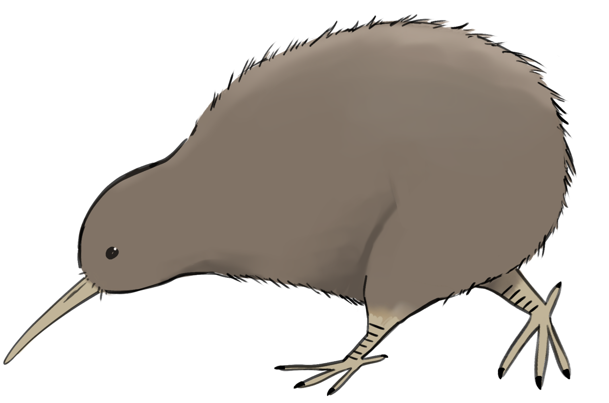
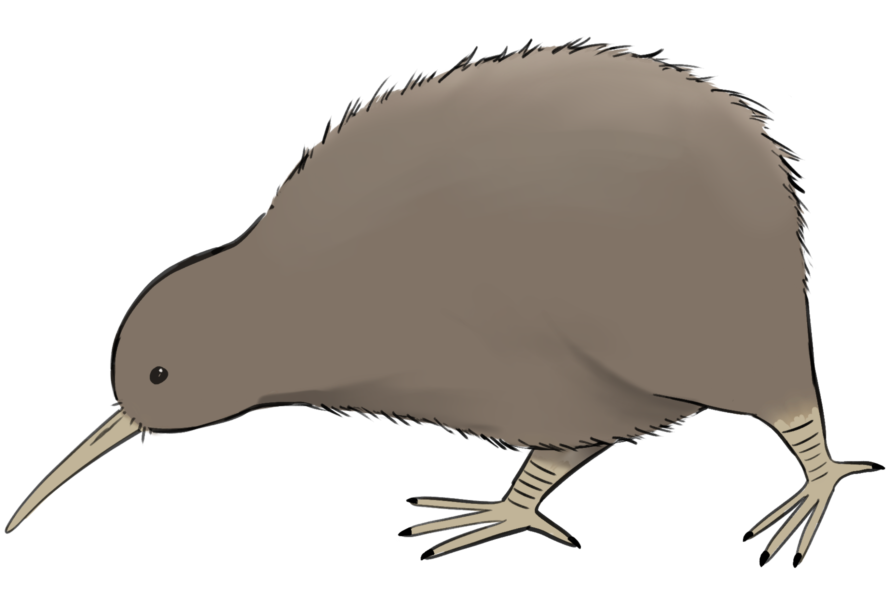
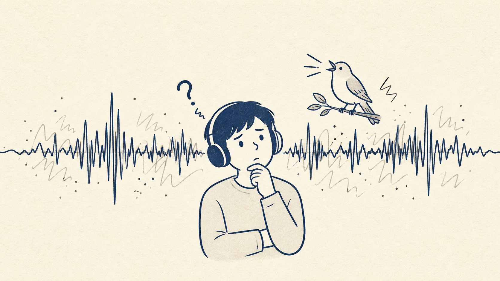
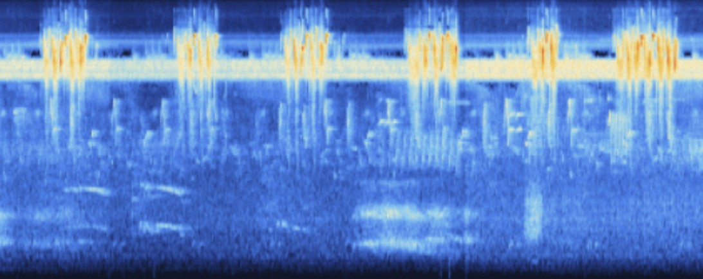

期末專題
EchoWing
可解釋人工智慧鳥鳴辨識與生態學習平台
A 組
林欣輝 生科四 B11B01041
施貞蓉 生科二 B13B01022
陳柏銓 電機四 B11901083
龔立淳 生科四 B11B01024


問題
非專業人士難以辨識鳥鳴
鳥鳴短暫、吵雜，
常與背景聲重疊
傳統辨識仰賴長期經驗

專題目標
XAI 將查詢轉為知識
上傳鳥鳴音訊
取得候選物種
理解判斷原因
核心價值
核心價值
降低辨識門檻
解釋模型預測
促進生態學習
使用流程
從聲音到詮釋
音訊 / 影片上傳
WAV / MP3 / 影片
前處理
重取樣 · 單聲道 · 5 秒切片
模型推論
候選物種 + 信心分數
結果視覺化
聲譜圖 + XAI 解釋
系統架構
前端、後端與 XAI
使用者
瀏覽器操作
→
前端
React + Vite
→
後端
介面
FastAPI
→
音訊處理
32 kHz · 5 秒切片
→
模型
Perch / ONNX Runtime
→
結果頁
聲譜圖 · PDF 匯出
模型
為什麼使用 Perch
Google DeepMind 開發的生物聲學模型
提供通用聲學特徵向量
降低從零訓練成本
XAI 設計
XAI 顯示內容
重要的時間片段
可能影響預測的頻率區域
每個候選的信心分數

限制與下一步
目前限制與
優化方向
提升模型準確率
優化結果頁與 XAI 視覺化
準備穩定展示與備用影片
EchoWing將鳥鳴辨識轉化為可理解的學習